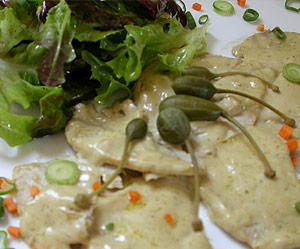

Vitello Tonnato
5,5 von 6ca 1,2 kg kalbsnuss ca. 2 stunden in kochendem wasser mit karotten, stangensellerie, zwiebeln und einem lorbeerblatt garen. kein salz verwenden! im wasser abkühlen lassen.
für die sauce eine mayonaise zubereiten und mit 200 g thon, 5 sardellenfilets (anchovis) 3 esslöffel kapern und 2 dl olivenöl mischen. den kalten braten sehr dünn schneiden und in eine flache form verteilen, mit der sauce vermengen. mind. 24 std. im kühlschrank ziehen lassen. mit karpern und salat garnieren.
